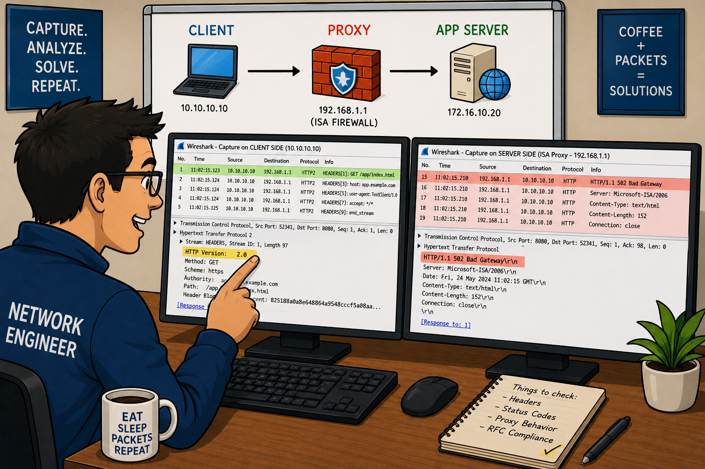

HTTP is a request/response protocol. The client sends a request, the server sends a response. HTTP uses TCP — but what's the trade-off of using a new TCP connection for every HTTP object? How did HTTP 1.1 Persistent Connections and HTTP Pipelining address this?
The Purpose of HTTP
HTTP (HyperText Transfer Protocol) uses a request/response model to transfer data between hosts. HTTP communications use TCP as the transport mechanism — the most commonly used HTTP port number is 80. HTTP is defined in RFC 2616.
Clients send commands such as GET and POST to the HTTP server. HTTP servers respond with a numerical response code followed by data. Response codes greater than 399 identify client and server errors.
- 1xx — Informational: Request received, continuing process
- 2xx — Success: Request successfully received, understood, and accepted. 200 OK most common
- 3xx — Redirection: Further action needed. 301 Moved Permanently, 302 Found (temp redirect), 304 Not Modified (cache)
- 4xx — Client Error: Bad request syntax or cannot fulfill. 400 Bad Request, 404 Not Found, 403 Forbidden
- 5xx — Server Error: Server failed to fulfill apparently valid request. 500 Internal Server Error, 502 Bad Gateway, 503 Service Unavailable
When a client loads a web page, the first object downloaded is the HTML page, which references many other objects (CSS, JS, images). A web page that appears to load slowly might actually have good network performance to the primary server but be slow due to dependencies on third-party servers. How would you prove this in Wireshark?
Analyze Normal HTTP Traffic
HTTP Request Process
Normal HTTP traffic shows a predictable pattern: TCP three-way handshake → HTTP GET request → HTTP response → possibly more GET requests for embedded objects.
When analyzing HTTP communications, watch for the If-Modified-Since request modifier. This indicates the client has a page in cache. If the server responds with code 304 Not Modified, the client loads the page from cache instead of across the network — this will significantly affect web loading time analysis.
If a client frequently gets 304 Not Modified responses, it's loading content from cache. This is efficient but may hide the true download time. When benchmarking web page performance, clear the browser cache first so you see the actual download times. Filter: http.response.code==304
Analyze Slow HTTP Sessions
Slow web browsing sessions can be caused by:
- TCP problems (retransmissions, window zero conditions)
- Interdependencies on third-party sites (advertisers, CDNs, analytics)
- Non-optimized web sites with many small objects requiring many TCP connections
- High server response times (time between HTTP request and first response byte)
Wireshark enables you to rebuild web pages and export HTTP objects (File | Export Objects | HTTP) to examine what was downloaded.
HTTP clients use GET to retrieve data and POST to send data to the server. POST is commonly used for form submissions and file uploads. What display filter would you use to filter only HTTP POST requests? And how would you filter all HTTP server errors (5xx range)?
HTTP Methods & Response Codes
Common HTTP Request Methods
- GET: Retrieve a resource from the server
- POST: Send data to the server (form submissions, file uploads). Data is in the request body.
- HEAD: Same as GET but only returns headers — check if resource exists/changed without downloading it
- PUT: Upload a file to the server
- DELETE: Delete a resource on the server
- OPTIONS: Request supported methods for a resource (CORS preflight)
Key HTTP Response Codes
- 200 OK: The desired page was located successfully
- 301 Moved Permanently: Resource has permanently moved — update bookmarks
- 302 Found: Temporary redirect
- 304 Not Modified: Cached version is current — load from cache
- 400 Bad Request: Server can't understand the request
- 401 Unauthorized: Authentication required
- 403 Forbidden: Server refuses to authorize
- 404 Not Found: Resource doesn't exist — categorized as CLIENT error (even if caused by broken server link)
- 500 Internal Server Error: Server-side error
- 502 Bad Gateway: Proxy received invalid response from upstream server
- 503 Service Unavailable: Server temporarily unable to handle requests
HTTP 404 Not Found is categorized as a 4xx client error — even though it's often caused by a broken link on the server (the server itself is running fine). This can be counterintuitive. Use filter http.response.code==404 to find all 404 errors in a trace.
HTTP is a text-based protocol — requests and responses are human-readable. When you use the http display filter, you only see packets with HTTP content. But a web browsing session also has TCP handshake packets and TCP ACKs. What filter should you use to see the COMPLETE HTTP conversation including the TCP handshake?
HTTP Packet Structure
HTTP Request Format
HTTP requests follow a simple text format. A GET request packet contains:
- Request line: Method + URI + HTTP version (e.g.,
GET / HTTP/1.1) - Request headers: Host, User-Agent, Accept, Accept-Language, Connection, If-Modified-Since, Cookie, etc.
- Empty line: Separates headers from body
- Request body (optional): Used in POST requests to send data
HTTP Response Format
- Status line: HTTP version + status code + reason (e.g.,
HTTP/1.1 200 OK) - Response headers: Content-Type, Content-Length, Server, Date, Set-Cookie, Cache-Control, etc.
- Empty line
- Response body: The requested content (HTML, images, etc.)
Follow TCP Stream
Right-click any HTTP packet and select Follow TCP Stream to view the complete HTTP conversation in human-readable format. This shows both the client request and server response. Use Follow SSL Stream for HTTPS (if you have the decryption key).
Select File | Export Objects | HTTP to view all objects downloaded from a web session and save them. Wireshark reassembles the TCP stream and extracts each HTTP object. Remember to enable TCP reassembly (TCP preference: Allow subdissector to reassemble TCP streams) before trying to export objects.
The HTTP Load Distribution statistic reveals website dependencies. If you browse www.espn.com and create an HTTP Load Distribution report, what would the different rows represent? Why would a web page that appears slow show mostly 2xx response codes in the HTTP Packet Counter?
HTTP Statistics & Flow Graphs
Display HTTP Statistics
Wireshark tracks HTTP statistics for load distribution, packet counters, and HTTP requests. Select Statistics | HTTP.
HTTP Load Distribution
HTTP Load Distribution lists the HTTP requests and responses by server. Expanding the HTTP Requests by HTTP Host section lists the hosts contacted and the number of request packets sent to each one. This statistic is excellent for determining web site redirections and dependencies. A simple browsing session to www.espn.com may contact 35 different servers — it is easy to understand why such sites are slow to load.
HTTP Packet Counter
When analyzing HTTP communications, the HTTP Packet Counter is invaluable because it lists the Status Code responses. Spotting 4xx Client Error or 5xx Server Error responses is simple. Use this to quickly find: count of 200 OK, 301 redirections, 404 errors, 500 server errors.
HTTP Requests
HTTP Requests lists each item requested of each HTTP server — useful for seeing exactly which URLs were requested and how often. You can apply a display filter to the statistics for specific host analysis.
Graph HTTP Traffic Flows
Flow Graphs (Statistics | Flow Graph) provide a visual representation of the communications that occur during an HTTP session. Each target host is listed in a column and every packet is listed in a row. This is an ideal statistic window to open when troubleshooting slow web browsing sessions — you can see at a glance which server is causing delays.
Flow Graph options: All Packets or Displayed Packets; General Flow or TCP Flow; Standard source/destination addresses.
Consider creating a Flow Graph based on your web browsing traffic. Capture your own browsing traffic to a popular website and notice the number of columns created because of other linked servers. Each column = one server. A column that shows long gaps between the request arrow and the response arrow = a slow dependency. Click the corresponding packet description to jump to that point in the trace file.
Set HTTP Preferences
HTTP Preferences (Edit → Preferences → Protocols → HTTP) allow you to: configure TCP Ports list (for non-standard HTTP ports), set SSL/TLS port for HTTPS traffic, enable/disable header reassembly, uncompress entity bodies (gzip/deflate), and set custom HTTP header fields.
HTTPS uses TLS to create an encrypted channel over TCP port 443. The TLS handshake occurs AFTER the TCP handshake. During the TLS Client Hello, the client sends a list of cipher suites it supports. Which side selects the actual cipher suite? What is the filter to see only TLS handshake packets?
Analyze HTTPS Communications
Your web browsing analysis will likely include HTTPS communications. At the start of a secure HTTP conversation, a standard TCP handshake is executed followed by a secure handshake process.
RFC 2818 defines the use of HTTP over Transport Layer Security (TLS). RFC 2246 details TLS version 1.0 which is based on SSL version 3.0.
Analyze SSL/TLS Handshake
The HTTPS communication begins with the TCP handshake on port 443 (or configured port). Then a TLS handshake occurs. View TLS handshake packets with filter: ssl.record.content_type==22.
TLS handshake traffic types:
- Session identifier: Identifies a new or resumed session (0 = new)
- Peer certificate: X509 certificate of the peer
- Compression method: Compression method for data prior to encryption
- Cipher spec: Defines the data encryption algorithm — the SERVER chooses from the client's list
- Master secret: 48-byte secret shared between client and server
TLS Handshake Sequence
- Client Hello: Lists supported cipher suites, TLS version, 28 random bytes, Session ID (0 = new session)
- Server Hello + Certificate + Server Hello Done: Server selects cipher suite, sends its certificate
- Client Key Exchange + Change Cipher Spec: Client computes premaster secret, encrypts with server's public key. Future client messages = encrypted.
- Server Change Cipher Spec: Server also switches to encrypted. Handshake complete.
Analyze TLS Encrypted Alerts
Encrypted Alerts may be seen in HTTPS communications — most commonly close_notify alerts, shortly followed by TCP FIN or Reset packets. Fatal alerts result in connection termination. If you see an encrypted alert followed by FIN, it's most likely a normal close_notify — not a problem.
Decrypt HTTPS Traffic
To decrypt HTTPS traffic, obtain the RSA private key from the server and configure it in Wireshark: Edit → Preferences → Protocols → SSL → RSA Keys List. Add: IP address, port (443), protocol (http), and path to the key file (.key or .pem format).
Once the key is applied, Wireshark can decrypt the traffic — HTTP requests become visible in the Protocol column. You can then Follow SSL Stream to read the decrypted content. Export SSL keys: File | Export SSL Session Keys.
The HTTPS client offers a list of acceptable cipher suites in the Client Hello. The HTTPS server selects the desired cipher suite to use for the communication. If the server doesn't support any of the client's cipher suites, the handshake fails. This is important for troubleshooting TLS connection failures — check what cipher suites each side supports.

When troubleshooting connectivity issues through proxy servers that perform application layer traffic inspection, a tool like Wireshark is invaluable.
A common scenario is one in which requests made through a router or simple packet filtering firewall work without issue, yet the same request made through a proxy fails.
An example of this was brought to my attention recently when a customer called our support team. Attempts to access a third-party web-based application were failing when accessed through the proxy, in this case a Microsoft ISA Server 2006. The error message received was an ambiguous HTTP 502 error.
Immediately I was able to reproduce the error and used Wireshark to capture traffic on both sides of the proxy. Looking at the response from the application server, the trace showed that the request version was HTTP 2.0 (as shown below).
Fascinating, because there is no RFC specification for HTTP 2.0! The ISA firewall, with its deep application layer inspection capabilities, limits communication over TCP port 80 to only valid, RFC-compliant HTTP. Since this was technically a violation of the RFC, the ISA firewall denied the request.
Uncovering these details would not have been possible without Wireshark.
TL;DR — Chapter 23
HTTP uses a request/response model to transfer data between hosts. HTTP communications use TCP as the transport mechanism — the most commonly used HTTP port number is 80.
Clients send commands such as GET and POST to the HTTP server. HTTP servers respond with a numerical response code. Codes greater than 399 identify client and server errors. Many people are familiar with the dreaded 404 Not Found response seen when a page does not exist.
When analyzing HTTP communications, watch for the IfModified-Since request modifier. This indicates that the client has a page in cache. If the server responds with code 304 Not Modified, the client will load the page from cache instead of across the network. This will affect your web loading time analysis.
Slow web browsing sessions can be caused by TCP problems as well as interdependencies on other web sites (such as advertisers), and non-optimized web sites. Wireshark enables you to rebuild web pages and export HTTP objects.
HTTPS traffic uses TLS to create a secure connection for HTTP traffic. These connections begin with a TCP connection which is followed by a secure handshake connection. During this connection process, the client and server negotiate security parameters such as the cipher suite. Wireshark can decrypt HTTPS sessions as long as you have the decryption key and configure Wireshark to apply that key to the HTTPS conversation.